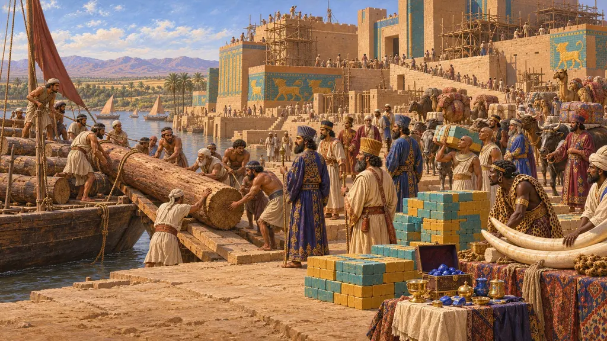
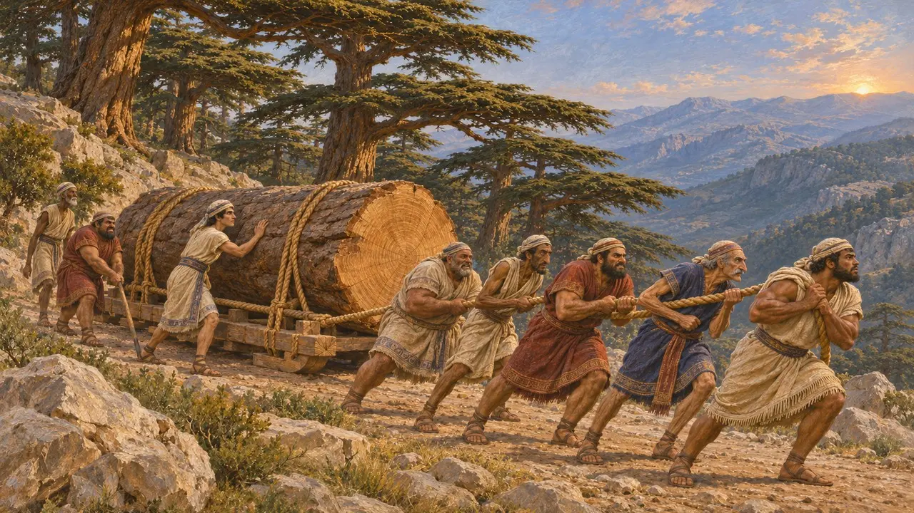
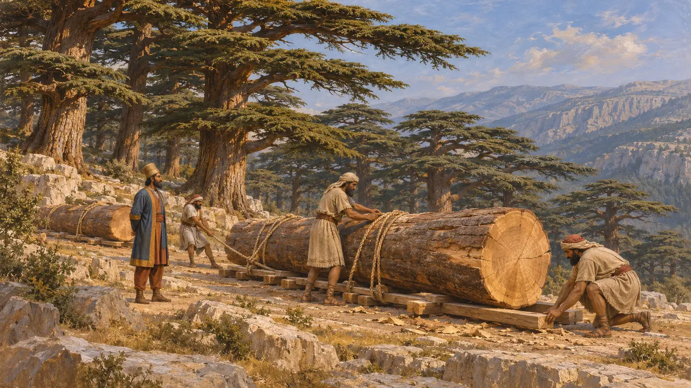
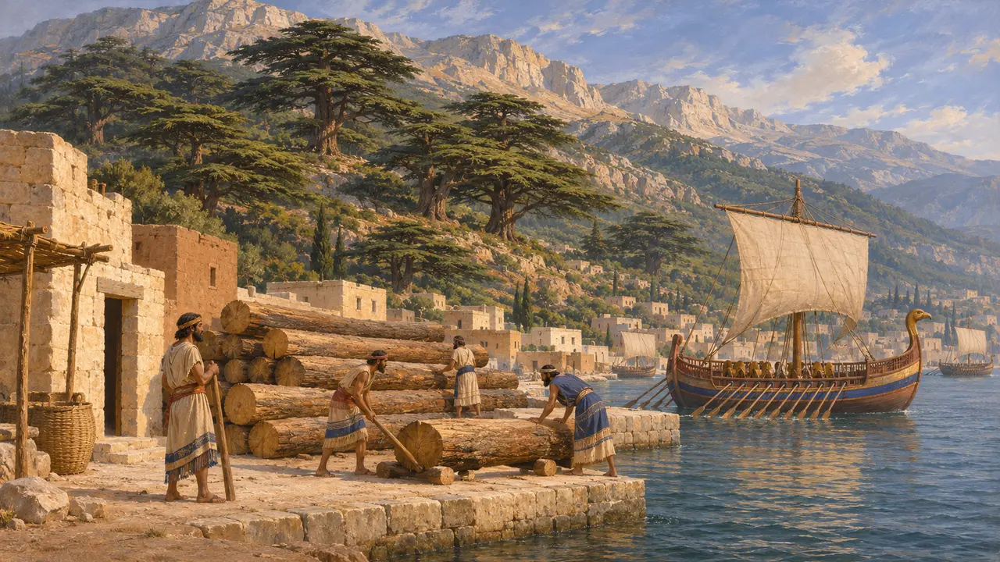
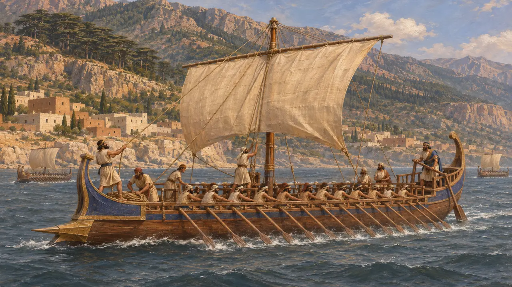

لبنان
منبع کوهستانی الوار سدر برای ساختوسازهای شاهی پارسی، سدهٔ 6 تا 5 پ.م.
در بازی: مرحلهٔ ۵: منشور
لبنان رشتهکوهی در پشت ساحل فنیقیه بود که از دیرباز در خاور نزدیک باستان به سدرش شهرت داشت. منشور شوش داریوش آن را منبع سدر بهکاررفته در کاخ او در شوش نام میبرد. شهرهای فنیقی ساحل از رعایای پارسیان بودند و کشتی نیز در اختیار ناوگان شاه میگذاشتند.
در بازی: بازی از لبنان فقط در بخشهای گاهنامه و مقالات رویدادها، بهویژه منشور شوش، یاد میکند، آنجا که منبع سدر کاخ است. لبنان ساختمان، یگان یا سازوکار ویژهٔ خود را ندارد.


لبنان بهعنوان تنها منبع نامبردهشده
مورد مناقشهDSf روشنترین متنی است که از لبنان بهعنوان منبع الوار برای یک بنای پارسی نام میبرد. از سدر در بناهای پارسی دیگر نیز یاد شده است، اما اینکه چه مقدار از آن از لبنان آمده و چه مقدار از دیگر نواحی کوهستانی، از روی متون روشن نیست. شناسایی خاستگاه الوارهای کاوششده نیز دشوار است.
P. Briant, From Cyrus to Alexander, 2002


کشتیهای فنیقی در ناوگان شاه
روایت باستانیهرودوت میگوید دستهٔ فنیقی در ناوگان خشایارشا ماهرترین دریانوردان بود. کرانهای که این خدمت دریایی را فراهم میکرد در کنار کوههای پرالوار نیز قرار داشت، هرچند منابع این دو را مستقیماً به هم پیوند نمیدهند.
Herodotus 7.89
منابع
- DSf
- P. Briant, From Cyrus to Alexander, 2002
- Herodotus 3.91
- Herodotus 7.89